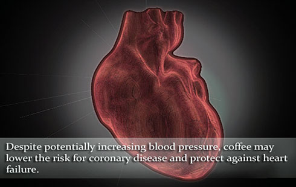
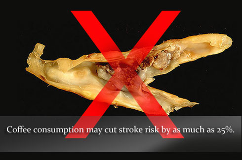

Этот ароматный напиток не просто помогает Вам проснуться — он также уменьшает риск истощения Вашей нервной системы… И депрессии, и рака, и сердечно-сосудистых заболеваний… Становится всё более очевидным, что кофе — это не просто ежедневный утренний ритуал. Появляются всё новые данные, свидетельствующие о пользе самого популярного стимулятора для поддержания психического и физического здоровья, но при этом угрожающими темпами растёт его потребление.
Достоинства кофе для души и здоровья: предисловие
Этот ароматный напиток не просто помогает Вам проснуться — он также уменьшает риск истощения Вашей нервной системы… И депрессии, и рака, и сердечно-сосудистых заболеваний… Становится всё более очевидным, что кофе — это не просто ежедневный утренний ритуал. Появляются всё новые данные, свидетельствующие о пользе самого популярного стимулятора для поддержания психического и физического здоровья, при этом угрожающими темпами растёт его потребление. Результаты последнего исследования, опубликованные в журнале NewEngland Journal of Medicine, показывают, что на фоне употребления кофе смертность от всех заболеваний снизилась на 10% за 13-летний период наблюдения. Приведённые ниже иллюстрации помогают продемонстрировать возможные достоинства кофе для поддержания психического и физического здоровья.
Сердечно-сосудистые заболевания

* Несмотря на способность повышать артериальное давление, кофе снижает риск появления ишемической болезни сердца и защищает от развития сердечной недостаточности
Это может показаться нелогичным: вещество, способное повышать артериальное давление, может быть полезным для сердечно-сосудистой системы. Употребление кофеина может вызвать кратковременное повышение артериального давления (АД) — основного фактора риска развития сердечно-сосудистых заболеваний (ССЗ), а регулярный приём был связан с более стойким повышением АД. Однако когда кофеин попадает в организм в составе кофе, стойкое повышение АД выражено незначительно, поэтому риск развития ССЗ уравновешивается положительными свойствами напитка. Кофейные зёрна содержат антиоксидантные вещества, что снижает окисление липопротеинов низкой плотности (ЛПНП), в связи с этим употребление кофе связано с уменьшением концентрации воспалительных маркеров. Умеренное употребление кофе связано с меньшим риском развития ишемической болезни сердца, а новые данные показывают, что приём, в среднем, 2 чашек кофе в день защищает от сердечной недостаточности.
Нарушение мозгового крообращения

* Употребление кофе снижает риск инсультов на 25%
Положительное влияние кофе на сосуды также проявляется и на головном мозге. Согласно данным мета-анализа, проведённого в 2011 г., употребление от 1 до 6 чашек кофе в день позволяет сократить риск инсультов на 17%. Снижение риска на 22-25% было показано при исследовании большой выборки шведских женщин, наблюдение за которыми, в среднем, продолжалось около 10 лет. В то время, как влияние кофе на риск развития инсультов у пациентов с ССЗ остаётся не до конца изученным, на Европейском совещании по вопросам артериальной гипертензии 2012 г. были представлены результаты мета-анализа, свидетельствующие о том, что употребление от 1 до 3 чашек кофе в общей популяции способствует защите от ишемического инсульта.